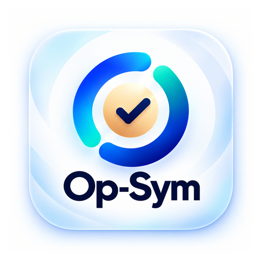

Op-Sym
Plan · Focus · Get things done
Install Op-Sym for Quick Capture and Android Share-to-Op-Sym.
In Safari, tap Share → Add to Home Screen → Add.
On supported Android/Chromium devices, installed Op-Sym can appear in the system Share sheet for text and links.